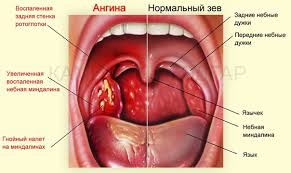

Визнечення
Ангіна — одне з найпоширеніших простудних захворювань. По латині ango значить стискати, так що ангіна дуже відповідна назва для хвороби, яка нещадно стискає наше горло, доставляючи сильний дискомфорт і хворобливі відчуття.
Симптоми ангіни та її діагностика Ангіна — це хвороба, яку легко розгледіти, просто широко розкривши рота. Червоні запалені мигдалини, нерідко з гнійним білим нальотом, або з гнійними включеннями в лакунах (поглибленнях) мигдалин, тому зазвичай всі називають цю хворобу гнійна ангіна. Таке запалення мигдалин називається тонзиліт. Слід зазначити, що тонзиліт також спостерігається при таких захворюваннях, як скарлатина, інфекційний мононуклеоз, дифтерія, венеричні захворювання (сифіліс, гонорея), але все ж ангіна є більш поширеним діагнозом при такій патології.Крім збуджених мигдалин, захворювання проявляється такими симптомами, як висока температура, озноб, біль при ковтанні, збільшення лімфатичних вузлів під вухами і під нижньою щелепою.
Види та ознаки ангіни
Катаральна ангіна характеризується сухістю в горлі, першінням, печінням. Температура невелика: 37-38 градусів. Мигдалики збільшені. Катаральна ангіна є найбільш легкою формої захворювання. Якщо її правильно лікувати, основні симптоми проходять вже за 2-3 дні. Але при неправильному лікуванні або його відсутності, катаральна ангіна може розвинутися в лакунарну або фолікулярну. Фолікулярна ангіна проявляється сильним збільшенням мигдаликів, на яких можна побачити гнійні освіти, величиною і формою нагадують шпилькову голівку (фолікули)., які потім розкриваються, утворюючи на мигдалинах білий наліт. Температура тіла звичайно підвищена до 38-39 градусів. Спостерігаються також симптоми інтоксикації організму: загальна слабкість, головний біль, ломота в тілі, озноб. Тривалість фолікулярної ангіни 5-7 днів. Лакунарна ангіна симптоматикою і тривалістю схожа на фолікулярну, але протікає зазвичай важче. Мигдалини сильно збільшені, лакуни розширені і заповнені гнійним вмістом, яке утворює на поверхні наліт. При натисканні гнійний наліт можна легко видалити, не пошкодивши тканину самих мигдалин. Рідше, ніж перераховані три форми ангіни, зустрічаються: Герпетична ангіна викликається вірусом Коксакі. Такою формою найчастіше хворіють діти. Симптоми герпетичної ангіни: висока температура тіла (38-40), відчувається біль при ковтанні, головний біль. Можуть також бути присутніми болі в м’язах, блювота, пронос. На мигдаликах, небі і задній стінці горла можна помітити невеликі червонуваті бульбашки, які через 3-4 дні розсмоктуються, не залишаючи слідів. Некротична ангіна. При такій формі ангіни виникає некроз однієй з мигдалин з утворенням виразки. Симптоматика некротичної ангіни: відчуття стороннього тіла при ковтанні, неприємний, гнильний запах з рота, посилене слиновиділення, важкі симптоми інтоксикації (висока температура, сплутаність свідомості, блювота, сильна слабкість і т.д.). При такій формі ангіни поверхня мигдалин нерівна, з сірувато-зеленуватим нальотом. При спробі видалити наліт утворюється кривава пове рхня. Як наслідок некрозу тканин, на мигдалині хворого утворюється глибокий дефект тканини, 1-2 см в діаметрі, з нерівним дном. Така ангіна триває довго — 1-3 тижні, а іноді може затягуватись до кількох місяців.
Причини
ПервинаУ більшості випадків збудниками захворювання стають стрептококові та стафілококові бактерії, рідше — грибки та віруси. Ангіна є заразною хворобою, і отримати її можна після контакту з вже хворою людиною.Вторина Переохолодження та знижений імунітет, звичайно, теж відіграють свою роль, так як сприяють активізації хвороботворних мікроорганізмів. Також факторами, що сприяють виникненню ангіни, є речовини, що подразнюють носоглотку (пил, сигаретний дим, алкоголь, гостра їжа та ін.) Підвищений ризик захворіти на ангіну також є у тих, хто страждає захворюваннями носоглотки (аденоїди, синусит, гайморит і т.д.). Слід знати, що поганий стан ротової порожнини (карієс, запалення пародонту) також може провокувати тонзиліт.
Лікування ангіни
Найвідоміший засіб як лікувати ангіну — полоскання. Чим полоскати горло при ангіні призначає лікар, відповідно формі, тяжкості та стадії захворювання. Самолікування в цьому випадку може призвести до негативних наслідків. Найчастіше для полоскань використовуються сольові та содові розчини, відвари шавлії, фурацилін. Зверніть увагу, що полоскання — це допоміжне, а не основний засіб лікування ангіни. Полоскання допомагають вимити з мигдалин наліт і бактерії, але не вирішують внутрішню і основну причину ангіни — наявність інфекції.Як вилікувати ангіну остаточно?
Що стосується медикаментозної терапії, насамперед, необхідно знати, що антибіотиками (переважно пеніциліном) лікують тільки ангіни, викликані бактеріями. При вірусних та грибкових формах застосовувати антибактеріальну терапію протипоказано. Крім того, не забувайте, що антибіотики п’ються курсом, припинення їх прийому одразу після полегшення симптомів, може вкрай негативно позначитися на здоров’ї. Щоб точно визначити збудник ангіни треба провести аналізи, які при сучасній діагностиці застосовуються тільки в тому випадку, якщо хвороба проходить важко або запущена. Амбулаторне лікування передбачає прийом більш м’яких препаратів, переважно на основі натуральних рослинних компонентів, що мають мінімальну ймовірність побічних ефектів. Препарат Тонзипрет призначений для лікування болю в горлі, що викликаються такими хворобами як ангіна, фарингіт, ларингіт, тонзиліт. Екстракт гваякового дерева, який містить Тонзипрет, успішно лікує запалені мигдалини і горло, а лаконос стимулює вироблення В-і Т-лімфоцитів і гамма-інтерферону, ефективно бореться з інфекцією. Ще один компонент Тонзипрет, червоний стручковий перець, містить алкалоїд капсаїцин, який швидко усуває біль у горлі. Дослідження показали, що застосування препарату Тонзипрет при болі в горлі ефективне в більш ніж 98% випадків. Особливу увагу слід приділити ретельному дотриманню постільного режиму, так як рух під час хвороби збільшує навантаження на серце. Показані: рясне тепле пиття (чай, мінеральна вода, компот із сухофруктів і т.д.) і тепла м’яка їжа (бульйони, пюре, протерті супи і т.д.).Наслідки та профілактика ангіни Ангіна — це та хвороба, яку ні в якому разі не можна ігнорувати. По-перше, зневага до свого стану може обернутися переходом захворювання в більш важку форму. По-друге, це може стати причиною хронічного тонзиліту, після чого лікувати ангіну доведеться як мінімум раз на рік. Ну і останнє — ангіна здатна негативно вплинути не тільки на органи дихальної системи, але і привести до необоротних наслідків у всьому організмі. Вона може стати причиною важких хронічних хвороб, таких як ревматизм (хвороба суглобів), серцева та ниркова недостатність. Як таких способів 100% захистити себе від ангіни не існує. Єдина можливість мінімізувати ризик захворювання — зміцнювати імунітет.